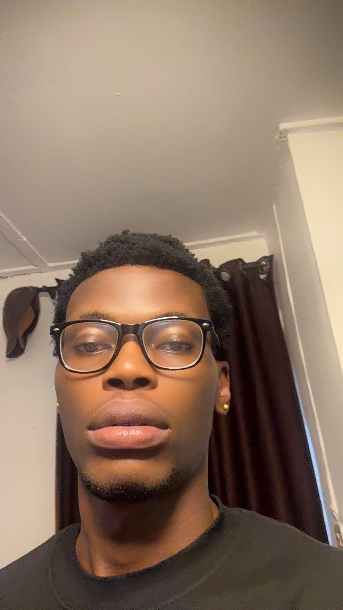

Summary
Motivaed web development student with strong interest in HTML, CSS, and JavaScript. Passionate about building clean responsive websites and learning modern frontend tools. Seeking opportunities to grow skills and work on real-world projects.
Education
- University of Calabar - B.Sc. Computer Science (2025-Present)
Work Experience
- Internships
- Volunteer Work
Skills
- HTML
- CSS
- JavaScript
- Communication
- Problem Solving
Awards
- Completed HTML Basics certificate - Coursera (2025)

Hobbies
Contact Me